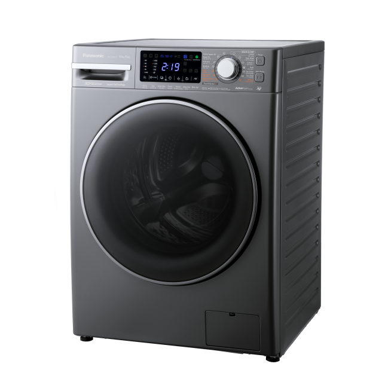

Top-loader washing machines are more traditional and can be easier to use. Unlike front-loaders they stand at a convenient height, so you wont have to adopt various yoga positions while loading or retrieving clothes. Better still, if you ever forget to add a final sock (or any other item), you can still pop it in, mid-cycle. With often larger capacities, and better lint-collecting capabilities, top-loaders can also be cheaper and faster.